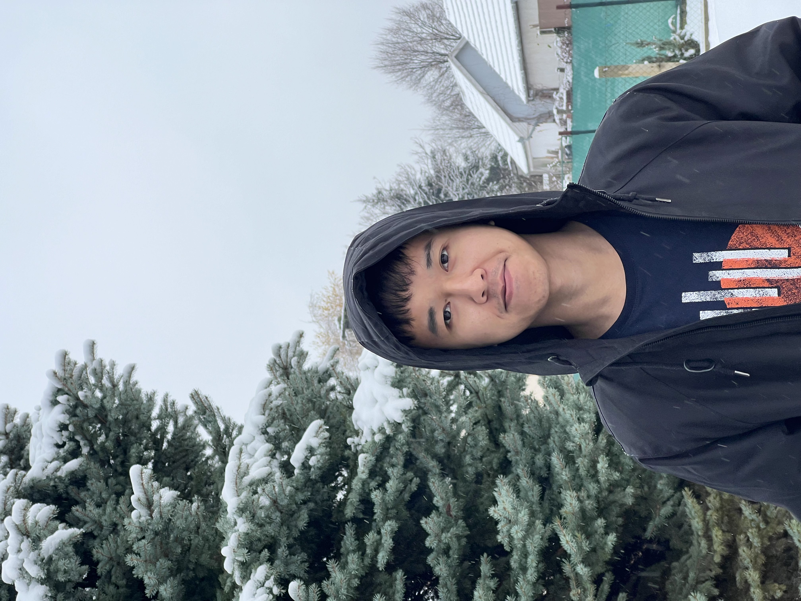

Toan Nguyen

Summary
I am a fresh graduate dedicated in backend development and eager to learn more.
Education
Bachelor of Science, Computer Science Engineering, John von Neumann University (2021 - 2025)
Work experience
-
Python Developer Intern - John von Neumann University.
July, 2024 - September, 2024
- Learning image processing methods using OpenCV library.
- In charge of resolving the main task by detecting different shape items in a box packaged by a packaging
machine.
- Self-learning advance image processing algo involved from scratch.
-
ERASMUS Mentor - John von Neumann University.
September, 2024 - January, 2025
- Guided 11 students from different countries in Europe including Turkey, Azerbajan, Spain,..
- Assisted students with accomadation documents and daily study.
- Helped to quick adapt to new uni environment.
- Take them for a city tour and assist to resolve daily araised problems.
Skills
- Programming languages: Java, Javascript, Python.
- Frameworks: Spring Boot, Express.js.
- Other: DSA, Git, Docker, Bash Scripting.
Awards and Certifications
- Full Scholarship from Vietnamese Goverment (2020 - 2025)
- Full Scholarship from Hungarian Goverment, Tempus (2020 - 2025)
Other